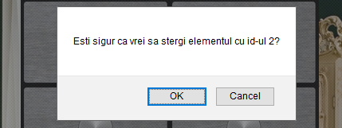

Bun venit la sectiunea ajutor. In pasii urmatori vei invata cum sa folosesti aplicatia DulApp.
Pe langa butonul "Help", pe care tocmai ai apasat, un alt buton util este butonul "Back". Cu ajutorul lui te poti intoarce pe pagina principala din orice pagina. El este pozitionat in partea stanga a paginii.
Pagina principala
Aceasta este pagina principala. In prima sectiune, cu alb, vei putea vizualiza toate informatiile tale personale. Poti modifica aceste informatii daca intrii la "Editare date personale". Daca vei pasa pe "Obiecte" vei fi redirectionat catre pagina cu obiectele tale personale. Pentru a te deconecta din contul tau apasa pe "Deconectare". Ultimul buton "Stergere cont" iti va sterge contul, stergerea se va face dupa ce vei confirma aceasta operatie.
Obiecte personale
Pe aceasta pagina vei putea vizualiza obiectele tale personale. Ai la dispozitie 3 dulapuri pe care le poti gestiona cum doresti. Pentru a schimba continutul unui dulap pasa pe cele 3 butoane numerotate. Obiectele sunt plasate in sertare proprii iar pentru a vizualiza toate detalii unui obiect este necesar sa apasi pe sertar.
Poti iesi din aceasta fereastra apasand pe ea.
Stergerea unui obiect din duplap se face prin introducerea id-ului unui obiect, el poate fi vizualizat daca apasi pe sertar, apoi apasand "Sterge elementul".
Obiectul va fi sters dupa ce confirmi operatia.
Pentru a adauga un obiect nou apasa pe "Adauga obiect".
Dupa apasarea butonului vor apasarea urmatoarele campuri pe care trebuie sa le completezi.
Daca doresti sa vezi ce au alti utilizatori publici in dulap poti apasa pe "Pagina publica".
Obiecte publice
Aici poti vedea obiectele tuturor utilizatorilor care au deciz sa devina publici.
Pentru a putea naviga mai usor din dulapuri poti cauta dupa numele obiectelor.
Editare date personale
Pe aceasta pagina iti poti edita datele tale personale, cu exceptia username-ului. Schimbarea parolei este optionala. Pentru a putea sa salvezi modificarile este necesar sa introduci parola. Poti salva apasand "Modificare date". Daca te-ai razgandit si nu mai doresti sa editezi date apasa pe butonul "Back" pentru a reveni la Pagina principala.
Asta a fost tot, sper ca informatiile ti-au fost de ajutor!